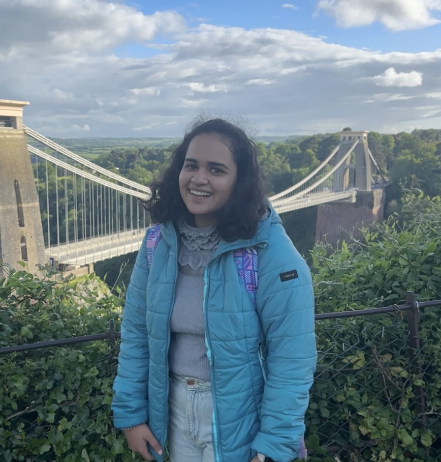

|
Junior undergraduate at the Indian Institute of Technology Gandhinagar, majoring in Electrical Engineering with a minor in Artificial Intelligence. I focus on leveraging Machine Learning, Deep Learning, and Computer Vision to solve complex challenges. Currently preparing to join Microsoft R&D as a Data Science Intern in Summer 2025. Previously, I worked on medical imaging projects under Dr. Vinay Namboodiri (University of Bath) and shadow segmentation under Dr. Shanmuganathan Raman (IIT Gandhinagar). Email / Google Scholar / GitHub / LinkedIn |
 |
Selected Publications

|
Aadya Arora, Vinay Namboodiri ICASSP 2025 Developed a novel approach integrating SAM2 with CLIP for enhanced classification in medical imaging. Tackled limited labeled data using segmentation capabilities to generate visual prompts, focusing CLIP's attention on key regions. Paper |

|
Aadya Arora, Shanmuganathan Raman ICVGIP 2024 Created a wavelet-based model for shadow segmentation and removal, achieving state-of-the-art performance on ISTD and DESOBA datasets. Paper |
Selected Projects
- NextCharacterPredictor: Built an MLP-based model for next character prediction using famous corpora. Optimized embedding dimensions and architecture for accuracy.
- Human Activity Recognition: Classified six human activities using the UCI-HAR dataset, applying advanced preprocessing and feature extraction techniques.
- Data Narrative: Conducted statistical analysis and parameter optimization across multiple datasets, extracting actionable insights.
Skills
- Programming: Python, C, C++
- Tools: MATLAB, TensorFlow, PyTorch, OpenCV
- Deep Learning: CNNs, ViT, SAM, CLIP, DeepLabv3+
Positions of Responsibility
- Teaching Assistant: Machine Learning, IIT Gandhinagar (Aug ’24 - Ongoing)
- Coordinator: Career Guidance, IIT Gandhinagar (Aug ’24 - Ongoing)
- Public Relations Executive: Blithchron, IITGN (Nov ’23 - Mar ’24)